Il s’écrit et se dit beaucoup trop de choses, souvent guidées par des impressions, des sentiments, des convictions, etc. lesquelles soumis à une honnête analyse ne résistent souvent pas longtemps. A cela s’ajoutent divers intérêts, souvent obscures pour le grand public, voire inavouables auxquels le dieu argent n’est souvent pas étranger, loin de là.
Naturellement, si au passage nous égratignons de bon cœur les spécialistes politico-écolos de l’énergie, cela ne signifie aucunement qu’il serait sage de ne rien faire pour améliorer les choses mais simplement qu’il ne faut pas se tromper de chemin et ainsi engager un pays tout entier dans une voie sans issue.
In fine, à terme une telle politique présente inévitablement un coût financier puis humain à travers les conséquences sociales consécutives, d’autant que l’argent public ne s’avère en aucun cas une source inépuisable même si elle permet trop souvent beaucoup de choses sans trop se soucier du résultat. Pour mémoire, les conseillers ne sont généralement pas les payeurs…
Ce n’est donc pas une trouvaille si l’on affirme que les centrales électriques à flamme, c’est-à-dire celles utilisant un combustible carboné, tel le charbon ou le lignite, sont la bête noire de ces écolos… Sans mauvais jeu de mots, évidemment ! Toutefois, il faut bien admettre que ces unités ne représentent pas les seuls matériels qu’ils souhaitent voir disparaitre du paysage, puisque :
- Les centrales nucléaires risquent à tout moment d’exploser et puis, il y a les déchets qu’elles produisent sans compter tous les autres inconvénients.
- Les centrales à fuel, ce n’est pas mieux que les centrales à charbon.
- Les barrages hydroélectriques provoquent des tremblements de terre mais aussi risquent également de se rompre suivant les circonstances.
- Les voitures à moteurs thermiques polluent, évidemment.
- Les poêles à bois et autres cheminées ouvertes émettent des poussières, du CO2 et donc polluent aussi l’atmosphère.
- Liste surtout pas limitative.
Toutefois, on observe que la voiture électrique ne produit aucun CO2, c’est vert, écolo, éco-responsable…Pourtant, à titre de simple exemple, on aimerait obtenir davantage d’informations concernant la fabrication des batteries au lithium, leur origine et ce qu’elles deviennent à terme.
L’hydrogène, c’est l’avenir puisque le rejet de sa combustion n’est que de l’eau mais pour l’heure, personne ne se pose la question de savoir d’où provient ce miraculeux gaz, pas plus comment l’apporter jusqu’au consommateur et encore moins quelle est la dépense énergétique globale depuis sa source jusqu’à sa consommation.
Les éoliennes, c’est super, idem pour les panneaux solaires. Là encore, silence radio concernant l’énergie consommée pour leur fabrication, les matériaux de construction, celle pour le transport et leur devenir après usage, pas plus au sujet du vieillissement dans le temps des cellules photovoltaïques comme la dépendance nationale à autrui.
La méthanisation c’est aussi l’avenir. Pourtant, certains commencent à s’inquiéter de l’utilisation de terres agricoles et autres forêts pour fabriquer du gaz.
Arrêtons les poêles à buches de bois et vive ceux à granulés. Là encore, rien sur leur prix d’achat, celui du combustible, les contrats d’entretien, le coût des éventuelles pannes et la consommation d’énergie électrique comme désormais la déforestation consécutive.
Quant au gaz naturel, c’est l’avenir, sous réserve de ne pas aborder son origine dont celui issu des schistes aux USA puis son transport par bateaux méthaniers dont les moteurs ne fonctionnent évidemment pas à l’eau minérale.
Tout doit être recyclable un maximum, sauf qu’il reste un bon nombre de points noirs, à commencer par l’énergie consommée, sa qualité comme celle des produits résultants non utilisables.
Liste à nouveau surtout pas limitative... Cependant, là s’arrête ce raisonnement idyllique car personne ou pas grand monde dans ce nébuleux milieu politico-écolo où semblerait… peut-être… régner divers intérêts, n’aborde les vraies questions. Il s’agit de celles qui tiennent compte de l’analyse de la valeur des décisions prises et des conséquences qui leur sont consécutives pour ne se contenter que d’un discours superficiel quitte à le remettre en cause quelques années après.
Suivant ce que l’on constate trop souvent, manifestement il ne suffit pas d’avoir de la peinture verte, d’enrober un produit du label ²recyclable² pour que cela constitue une sorte de finalité constituant la solution quasi parfaite. Bref, rêvons toujours mais en attendant qui paie cette écologie-business politiquement et correctement appelée ²transition énergétique² et à quel prix ?
On en déduit en toute bonne foi que les représentants de ce qu’est devenu en France un parti politique, sont manifestement des spécialistes de l’énergie en général et qu’ils peuvent ainsi orienter l’avenir d’un pays vers un monde nettement meilleur. En somme et résumé pour ce qui concerne la définition du bonheur, dans la pratique on pourrait rappeler la phrase bien connue : ² Ligne imaginaire qui recule au fur et à mesure que l’on avance²
Dans la mesure où le rêve est nécessaire, à la fin du sommeil la réalité ramène toujours à des choses beaucoup plus terre à terre ce qui, évidemment, n’interdit aucunement de réfléchir et encore moins d’expérimenter des technologies pouvant apporter des éléments positifs par rapport à la situation vécue.
Cependant, la première chose à faire est d’en connaître l’intérêt à la fois technique, financier et humain car in fine, l’objectif consiste tout de même à investir pour le bonheur de l’Humanité et non l’inverse qui se résume à utiliser cette même Humanité pour la satisfaction du dieu argent comme si cela constituait la finalité de la vie sur Terre.
Observons que ces mêmes politico-écolos oublient manifestement au passage les vrais et sincères écologistes, très souvent des individus ordinaires, discrets, animés de bon sens et qui n’ont pas besoin pour cela de faire de la politique : des extraterrestres, sans doute...
Unités à charbon encore opérationnelles en France
Suivant ce qui précède et considérant la situation actuelle de la production électrique en France, fin 2020 le gouvernement décida de retarder le déclassement des deux dernières unités électriques utilisant le charbon afin de sécuriser au mieux le réseau (Cf. METHODE de novembre-décembre 2020).
Evidemment honnie des spécialistes écolos, sinon intégristes, en France il n’existe plus que trois tranches côté EDF, soit Cordemais, près de Nantes en Loire Atlantique (deux tranches de 600 MW) et Le Havre en baie de Seine (une tranche de 600 MW) ce qui représente tout de même 1800 MW bruts au total, c’est-à-dire l’équivalent de deux tranches nucléaires REP (Réacteur à Eau Pressurisée) de 905 MW.
Pour mieux comprendre la suite et ainsi éviter de nombreux renvois en fin de texte, rappelons qu’une centrale thermique électrique comporte soit une, soit plusieurs tranches, quel que soit son type (combustible fossile, nucléaire…). Chaque tranche est donc à la base constituée d’un générateur de vapeur (chaudière) et d’un groupe turbo-alternateur, sauf à ce qu’il s’agisse d’une Turbine A Gaz (TAG) qui n’est autre qu’un réacteur modifié d’avion afin que l’énergie produite soit récupérée sur l’arbre et non sous forme de poussée en sortie de tuyère.
Cependant, quel que soit le type y compris nucléaire, on retrouve toujours l’alternateur pour la production d’énergie électrique puis un transformateur élévateur de tension destiné à l’évacuation vers le réseau de l’énergie fournie.
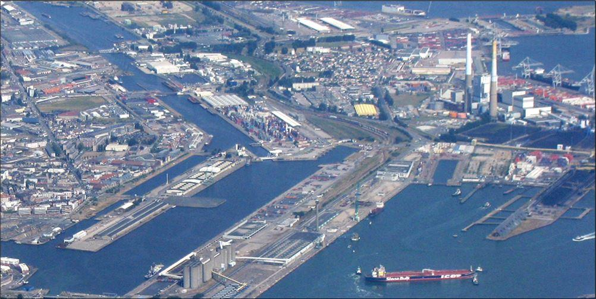
Centrale à charbon de Le Havre en baie de Seine et une partie de son port pétrolier avec à droite de la photographie, la centrale thermique EDF. La tranche de 600 MW à charbon se situe au niveau de la cheminée de 240 m de hauteur (peinture blanche plus nette) et du bâtiment plus haut abritant la chaudière. Devant, ce sont les deux tranches de 250 MW, hors service. On aperçoit le parc à charbon devant l’installation. Photo. J-MT 2014 - Altitude d’origine 1200 m.
Ajoutons aux deux unités précédentes, deux autres centrales mais privées, à savoir :
- La centrale Emille Huchet située à Saint Avold (département de la Moselle) exploitée par la société UNIPER, soit un groupe de 600 MW au charbon et deux groupes à cycle combiné de 430 MW à gaz naturel ce qui en fait la plus puissante unité à combustible fossile encore en activité en France, soit 1460 MW. Toutefois, la tranche au charbon, comme Gardanne devrait être définitivement arrêtée en 2020.
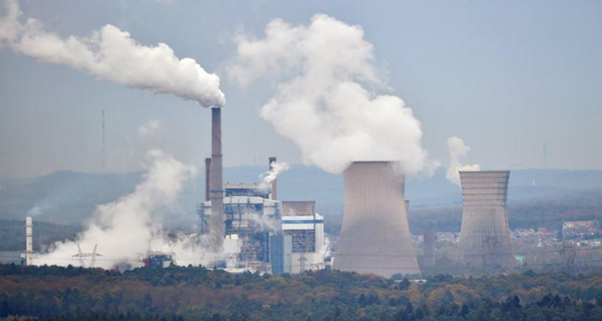
CENTRALE THERMIQUE EMILE HUCHET - ENERGY NEWS - LOUISE CHAPE
- Celle appartenant désormais à la Sté. tchèque EPH, dite de Gardanne, située près d’Aix en Provence (département des Bouches du Rhône), située sur le carreau de mine du même nom dépendant du bassin houiller de Provence, fermé depuis fin janvier 2003. Cette unité comporte une tranche de 600 MW à charbon (Provence 5), toujours opérationnelle mais non en service depuis plusieurs années et une de 150 MW (Provence 4) à biomasse qui était à l’arrêt depuis 2017 sur décision du tribunal administratif de Marseille mais également semble-t-il à cause de divers avatars de jeunesse.
En ce qui concerne l’unité à charbon de 600 MW, elle possède la plus haute cheminée de France avec 297 m. Sa chaudière, de type à lit fluidisé, implique que le charbon désormais importé puis localement pulvérisé soit maintenu en suspension dans le foyer par l’air primaire (air atmosphérique issu de gros ventilateurs), générant une température d’environ 850 à 900 °C au lieu de 1500 à 1600 °C pour un classique générateur de vapeur type Cordemais ou Le Havre.
Moins finement broyé que nécessaire pour les chaudières classiques ci-dessus, le combustible est ainsi recyclé plusieurs fois dans le foyer où les gaz émis par sa pyrolyse, brûlent sans pour autant faire fondre les matières parasites (roches broyées avec le charbon).
En théorie, cette technique permet d’assurer à la fois un très bon rendement de combustion mais également une moindre production d’oxydes d’azote (NOx) avec un impact favorable sur les cendres et les mâchefers.
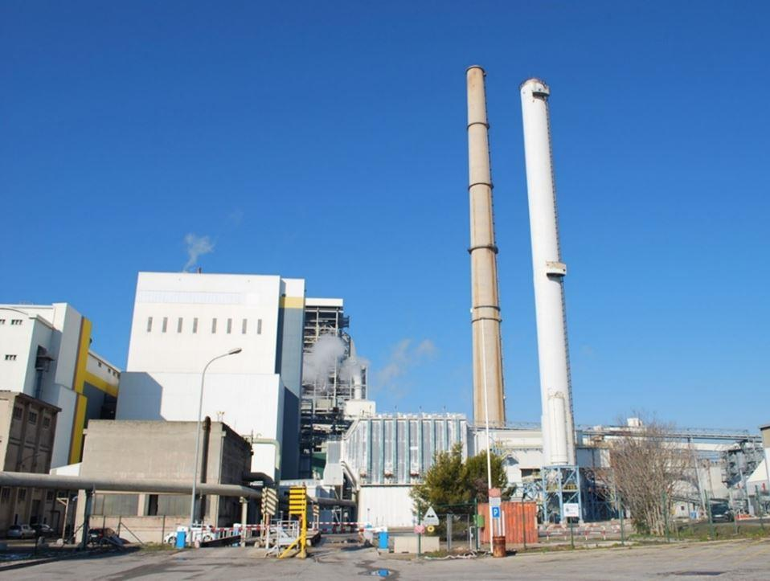
Centrale 600 MW de Gardanne et ses deux réfrigérants atmosphériques. Sa chaudière à charbon se trouve derrière la cheminée blanche. La petite cheminée correspond à l’unité à biomasse de 150 MW dont de bardage de la chaudière est également blanc. Photo. JMT - Janvier 2021.
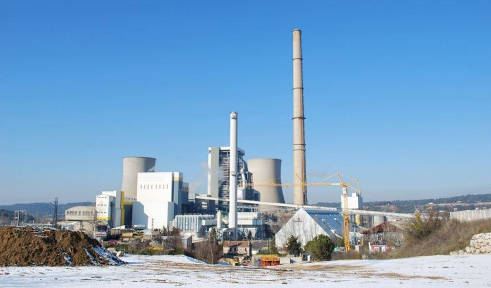Le pays disposerait ainsi à terme de 1800 MW côté EDF et 1200 MW potentiels côté sociétés privées, soit au total encore 3 000 MW au charbon.
Fonctionnement général d’une tranche à combustible fossile
Pour comprendre les choses, il vaut généralement mieux savoir de quoi l’on parle...
Dans son principe, le fonctionnement d’une tranche à charbon n’est pas différent de celui d’une même unité dont la chaudière serait alimentée en fuel ou en gaz, qu’il soit naturel ou issu, par exemple, d’une usine sidérurgique produisant du gaz de haut fourneau ou de four à coke. C’est le cas de celle de Dunkerque, aujourd’hui encore équipée de deux groupes de 117 MW net mais de quatre à l’origine lorsque la société USINOR était à pleine capacité avec quatre hauts-fourneaux dont à l’époque le plus important d’Europe.
De même, lorsque l’on parle de puissance nette, il s’agit de la puissance brute ôtée de la consommation des auxiliaires nécessaires au fonctionnement général de la tranche (pompes, ventilateurs, transformateurs…) ce qui représente en moyenne 5% de la puissance fournie par l’alternateur.
Dans les centrales thermiques à flamme (combustible fossile), on retrouve toujours une chaudière produisant de la vapeur d’eau surchauffée à haute pression (HP) et haute température (HT), soit 127 bars et 540 °C pour les unités de 125 MW, 150 bars et 565 °C pour celles de 250 MW et plus. Cette vapeur alimente une turbine accouplée à un alternateur qui fournit l’énergie électrique par simple transformation de l’énergie mécanique de la turbine. L’ensemble, solidaire d’une même ligne d’arbre s’appelle un groupe turboalternateur.
Le générateur de vapeur (Chaudière)
Dans ce qui suit, nous nous intéresserons plus particulièrement aux tranches utilisant le charbon comme remises en disponibilité depuis l’automne 2020.
Côté combustible, en France et pour les trois tranches d’EDF ci-dessus, il s’agit de charbon désormais importé.
C’est ce qui explique la proximité de ces centrales près des côtes ou le long de grands fleuves ce qui favorise également la condensation de la vapeur d’eau s’échappant des corps basse pression (BP) des turbines vers le condenseur (cf. ci-après).
Une centrale thermique à charbon nécessite une relative emprunte au sol, d’une part pour le stockage pouvant aller jusqu’à près de 500 000 tonnes suivant sa consommation mais également pour l’évacuation des cendres et des mâchefers, lesquels sont issus de la combustion dans les chaudières. On profite alors pour cela de zones marécageuses, voire parfois d’une utilisation comme ballast routier, comme remblais ou d’autres usages.
Les charbons utilisés sont généralement de basse qualité car les anthracites, roches minérales à haute teneur en carbone, sont plutôt réservés pour des usages dans le secteur du chauffage urbain ou de la chimie.
Le PCS (Pouvoir Calorifique Supérieur) est souvent peu élevé si bien qu’en conséquence les mâchefers sont importants ce qui n’est pas sans soucis au niveau du service conduite de la centrale comme son homologue côté entretien car le matériel souffre. Ceci d’autant plus qu’avant de pénétrer dans la chaudière d’une telle tranche thermique classique, (hors chaudières à lit fluidisé) ledit charbon est à peu près réduit à l’état de farine par des broyeurs. Qu’ils soient à boulets comme à dispositifs pendulaires, leur usure dans le temps est loin d’être négligeable comme le bruit émis et la consommation d’énergie...
Explications concernant le schéma
Les parois de la chambre de combustion sont constituées de tubes en acier austénitique dont le montage est représenté au centre du schéma. Soudés entre eux par l’intermédiaire d’entretoises, l’ensemble assure ainsi l’étanchéité vis-à-vis des gaz de combustion.
Le charbon pulvérisé arrive dans les brûleurs, propulsé par l’air atmosphérique dénommé, de soufflage, depuis des ventilateurs du même nom mais en passant avant cela dans un échangeur de chaleur appelé réchauffeur d’air, situé dans le circuit des fumées.
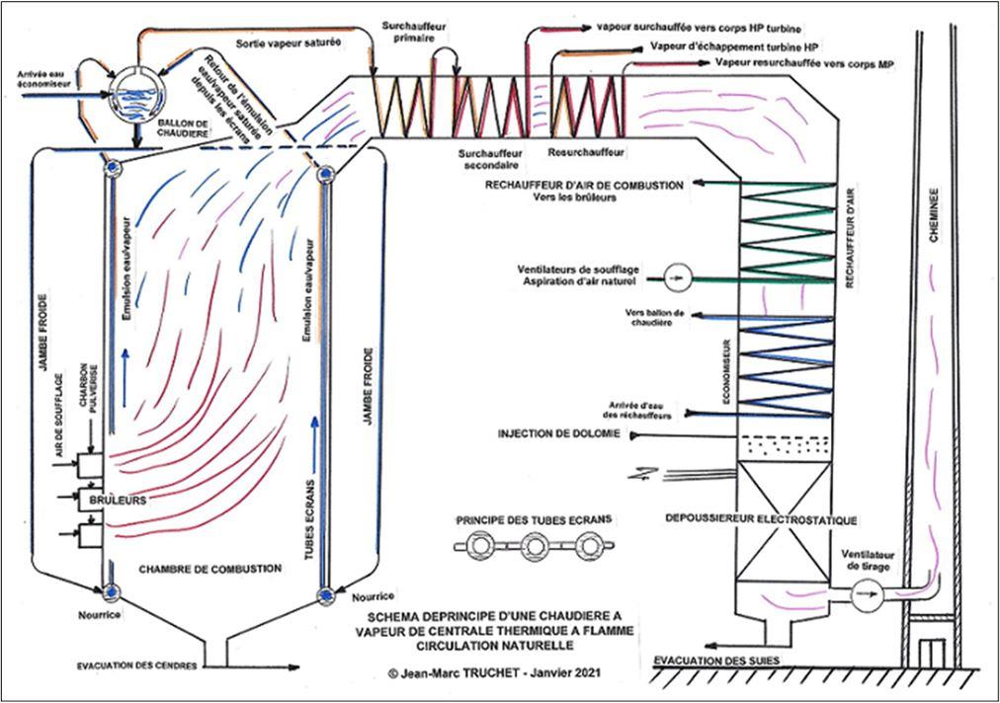L’allumage initial des brûleurs s’effectue généralement au fuel léger. Durant le fonctionnement de la chaudière, les flammes ne touchent jamais les tubes écrans sous peine de destruction à terme.
La chambre de combustion reste toujours en dépression par rapport à l’environnement, sauf pour quelques unités comme les anciennes centrales EDF de St. Ouen, Artix ou Ambès pour lesquelles elle est en pression ce qui requiert des dispositions particulières d’étanchéité aux gaz de combustion. Quant à ces derniers, ils sont évacués à la cheminée par des ventilateurs dits, de tirage, sauf pour ces foyers en pression où les ventilateurs de soufflage assurent tout leur cheminement.
Préalablement broyés, les mâchefers sont généralement évacués par voie hydraulique depuis le cendrier de la chaudière comme les suies en pieds de dépoussiéreur.
Au sommet de la chaudière, haute de plusieurs dizaines de mètres suivant la puissance demandée par le groupe turboalternateur, soit près de 60 m pour une tranche à charbon, se situe le ballon de chaudière qui n’est autre qu’un réservoir dans lequel est maintenu précisément en conséquence le niveau d’eau distillée et traitée. De ce réservoir partent deux grosses tuyauteries appelées jambes froides qui vont alimenter des nourrices situées en pieds de chaudière, sur lesquelles sont soudés les tubes écrans au sein desquels s’effectue l’émulsion eau/vapeur qui remonte naturellement par différence de masse volumique vers le ballon de chaudière. Par des dispositifs internes, c’est ici que s’effectue la séparation entre l’eau et la vapeur qui est saturée, autrement dit toujours en contact avec sa phase liquide.
La vapeur saturée sortant en partie supérieure du ballon de chaudière alimente en général deux échangeurs de chaleur placés au début du circuit des fumées. C’est à ce niveau qu’elle devient alors surchauffée et sèche, autrement dit exempte de particules d’eau ce qui lui permet alors d’être injectée au corps HP de la turbine.
Précisons à nouveau qu’il s’agit ici d’un principe général qui s’applique également pour les unités à lignite, à fuel et à gaz, naturellement sous réserve de divers aménagements dont au niveau des brûleurs. Certaines centrales furent d’ailleurs transformées du charbon au fuel comme Gennevilliers (début du démantèlement en 1990).
Pour les unités de 250 et a fortiori de 600 MW, la circulation naturelle n’étant plus suffisante pour évacuer les calories produites par la combustion, des pompes de circulation d’eau sont installées en pieds des jambes froides. Naturellement, tout cet ensemble est soumis aux conditions de pression et de température indiquées en début de texte.
Le traitement des fumées
Arrivé à ce stade, la question qui se pose pour ces très chers politico-écolos, concerne évidemment les poussières émises par la cheminée, l’incontournable dioxyde de carbone (CO2) et autres oxydes d’azote (NOx), soufre et métaux lourds comme à peu près dans toute combustion mais qu’en est-il exactement ?
Côté poussières, c’est raté pour ces éminents spécialistes car ce type de centrale électrique, comme d’ailleurs celles alimentées en fuel, sont équipées de dépoussiéreurs électrostatiques avant rejet des fumées à cette cheminée. Leur efficacité dépasse généralement 98 % ce qui signifie que le panache s’échappant de ladite cheminée, suivant la température et l’hygrométrie ambiantes, n’est avant tout constitué que de vapeur d’eau et des gaz de combustion mais reste souvent peu visible. Si tel n’est pas le cas, c’est que l’installation est défaillante ou fait l’objet d’une conduite approximative ce qui n’est pas le cas en France.
Imaginons d’ailleurs que les panaches des réfrigérants atmosphériques des centrales nucléaires, pour celles en étant équipées, ne contiennent que de la vapeur d’eau et pas autre chose ce qui n’a pas empêché certains médias à une certaine époque, d’écrire que c’était le réacteur qui fumait… Quelle érudition !
Dans le genre, on verra également dans les années 85, c’est-à-dire en pleine construction du programme électronucléaire français, affiché sur grand écran derrière le présentateur d’un journal télévisé du soir sur une chaîne nationale, un réacteur CFM 56 d’AIRBUS (GE-SNECMA) en lieu et place de celui d’une centrale de 900 MW dont il était question… Cela donne tout de suite le niveau de l’information diffusée que va retenir le téléspectateur…
Dans le domaine de l’absurdité comme des obscures intérêts, les limites sont souvent à géométrie variable !
Quant au soufre, dès la sortie de la chaudière, sinon directement dans le foyer pour ceux à lit fluidisé, on injecte à contrecourant une poudre appelée dolomie qui n’est autre qu’un double carbonate de calcium et de magnésium CaMg(CO3)2 ce qui va transformer le soufre natif en sulfate et en sulfite de calcium et de magnésium, une réaction chimique des plus banales qui résout grandement le problème de l’acidité des fumées.
Pour les métaux lourds, il s’agit là d’une autre affaire mais qui n’est pas propre au charbon. Cependant, il faut aussi ramener les choses à la réalité car l’on pourrait également aborder la radioactivité extraite du sol avec le combustible mais ceci reste tout de même à quantifier et à analyser avant d’en extrapoler des conséquences dommageables ce que d’aucuns n’hésitent pourtant pas à faire. Quoi qu’il en soit, subsiste néanmoins l’incontournable CO2 qui serait largement à la base des déboires climatiques constatés et par voie directe de conséquences des taxes en tous genres, sensées en limiter la délétère action, soit :
C + O2 = CO2 = 12 g + 16 g x 2 = 44 g
Il s’agit de la masse molaire, appelée molécule-gramme dans l’ancien système CGS.
Cela signifie que chaque gramme de carbone contenu dans le combustible libère après combustion parfaite avec l’oxygène de l’air atmosphérique, 44 g de dioxyde de carbone (CO2).
Pour obtenir une valeur plus précise en service, il suffit de multiplier par le nombre de tonnes consommées par la centrale ce qui devient vite très important.
En résumé, comme dans le fuel lourd, le carbone en constituant le principal élément oxydable (la combustion), d’une manière incontournable cela génère un fort dégagement de CO2 ce qui est parfaitement traduit par cette élémentaire formule chimique. Compte tenu des temps qui courent, admettons sans réserve que ce n’est évidemment pas l’idéal…
Le groupe turboalternateur
Suivant sa puissance, le constructeur, le travail de la vapeur et donc sa détente dans les aubages, ce groupe est composé d’un corps haute pression (HP), d’un ou de deux corps moyenne pression (MP) et d’un corps basse pression (BP). Toutefois, le nombre de corps et leur position peuvent varier suivant ledit constructeur comme la puissance demandée à la turbine dont la vitesse de rotation de l’arbre est de 3 000 t/min pour les unités à flamme et de 1 500 t/min pour les unités nucléaires.
Comme on le constate sur le schéma ci-dessous, les différents corps de la turbine sont positionnés en opposition de manière à compenser au mieux les effets de la détente de la vapeur ce qui permet de limiter les efforts appliqués à la butée de la ligne d’arbre et donc son déplacement horizontal.
Au niveau de certains aubages de chaque corps de la turbine, des prélèvements de vapeur, appelés soutirages, alimentent des échangeurs de chaleur dont le rôle est d’élever progressivement en température l’eau venant du puits du condenseur. Toutefois, avant cela elle passe par un premier échangeur appelé, économiseur, situé en fin de circuit des fumées. Partant d’une température sortie condenseur (voir ci-dessous) située entre 20 et 30 °C suivant celle de refroidissement (fleuve, mer, réfrigérant atmosphérique) elle est alors injectée dans le ballon de chaudière à température déjà élevée (voir plus loin pour des explications complémentaires).
Cette ligne d’arbre est accouplée à un alternateur triphasé dont l’énergie électrique débite sur le réseau général par l’intermédiaire d’un transformateur également triphasé dont le rôle consiste à élever la tension à 225 ou 380 kV ce qui constitue les lignes sur pylônes, dites THT (Très Haute Tension) que l’on voit dans les campagnes et jusqu’aux postes d’interconnexion. Pour mémoire, la puissance délivrée s’énonce comme suit : P = 3UIcosr.
Suivant cela, pour une même puissance, plus on élève U (la tension), plus I (l’intensité) diminue ce qui revient à fortement limiter les pertes par échauffement des câbles (pertes par effet Joule) (1). Il s’agit ici d’un principe général en Europe mais pas en Russie où de nombreuses lignes sont sous courant continu et une tension de 750 kV ce qui offre certains avantages compte tenu des distances beaucoup plus importantes qu’en France, par exemple.
Afin de respecter la fréquence du réseau qui est de 50 Hz, l’admission vapeur HP à la turbine s’effectue par l’intermédiaire de vannes commandées par une régulation très précise.
Quant à la vitesse de rotation, soit 3000 tours par minute pour les unités dont il est ici question (2), celle-ci est rigoureusement fixée par la fréquence du réseau général et par construction, suivant le nombre de pôles de l’alternateur.
Après un arrêt de l’installation, quel qu’en soit la raison, lors de la remise en service de la tranche considérée et une fois que tous les paramètres nécessaires ont été obtenus (pressions, températures, etc.) ce qui demande plusieurs heures depuis l’état froid, l’opérateur procède alors au couplage du groupe turboalternateur sur le réseau général.
Depuis la salle de commande, soit en automatique, soit manuellement, progressivement la vitesse de la ligne d’arbre puis la tension sortie alternateur sont amenés en parfait synchronisme avec le couple fréquence/tension du réseau général puis il procède à la fermeture du disjoncteur sortie alternateur.
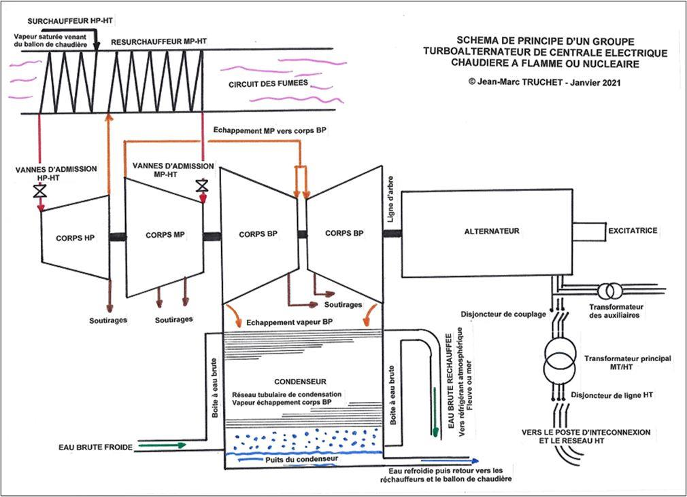Une fois cette opération effectuée, la vitesse de rotation de la ligne d’arbre du groupe turboalternateur sera alors fixée par cette fréquence du réseau général auquel toutes les tranches, quel que soit leur type, sont couplées. L’augmentation de puissance s’effectuera uniquement par ouverture progressive des vannes d’admission de vapeur HP-HT à la turbine sans que celle-ci puisse augmenter sa vitesse de rotation. Ensuite, comme pour toutes les centrales, via un automate appelé téléréglage, dans certaines limites chaque tranche s’adapte automatiquement à la puissance demandée par le réseau où des postes dits, d’interconnexion, distribuent alors l’énergie en différentes zones puis par abaissements successifs de la tension jusque chez le consommateur, industriel ou particulier (63 kV, 20 kV, localement 380 V). Dans son principe, le téléréglage consiste à transformer de micro-variations de fréquence en signaux de puissance et donc en variations de position des vannes d’admission.
Comme ci-dessus indiqué, l’ensemble du réseau français est interconnecté, y compris avec nos voisins (Belgique, Allemagne, Suisse, Italie, Espagne…) mais en cas d’incident ou autre, peut être découplé par zones, soit par un isolement commandé depuis un centre de contrôle, soit automatiquement par des protections à fonctionnement automatique (surcharge en ligne, défaut d’impédance en ligne, baisse de fréquence, etc.).
Le schéma ci-dessous décrit le principe d’un groupe turboalternateur. Pour mémoire, le rôle du condenseur est explicité avec celui du réfrigérant atmosphérique.
Le réfrigérant atmosphérique
Diantre !.. À part cela quel est donc l’utilité de cette monumentale construction en béton armé qui ne doit financièrement pas être gratuite ?
Pour cela, il faut remonter à la turbine, plus précisément au corps basse pression dont l’échappement de la vapeur s’effectue vers le condenseur. Celui-ci n’est autre qu’un gros échangeur de chaleur solidaire des corps BP, contenant des milliers de petits tubes constitués d’un alliage de cuivre, lesquels sont parcourus par de l’eau brute prélevée dans le fleuve, dans la mer ou venant du réfrigérant atmosphérique suivant le lieu d’implantation. Cette vapeur d’eau se trouve alors condensée dans le puits et l’eau résultante refroidie mise en pression par des pompes retourne dans le circuit à travers plusieurs réchauffeurs alimentés par les prélèvements de vapeur sur les différents corps constituant la turbine : les soutirages.
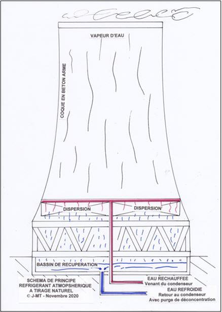
Schéma de principe d’un réfrigérant atmosphérique. JMT 2020.
Le premier circuit eau/vapeur, celui du générateur de vapeur jusqu’à l’échappement des corps BP de la turbine constitue une première boucle dite, fermée, dans laquelle il n’y a que très peu de consommation d’eau, hormis des prélèvements destinés aux mesures chimiques et autres purges. Par ailleurs, il est sans doute inutile de préciser que cette eau est totalement déminéralisée puis traitée comme il convient de manière à éviter des séquestrations de sels comme des attaques chimiques sur les différents composants.
Précisons aussi que la condensation de la vapeur s’accompagne d’une forte chute naturelle de pression, laquelle est entretenue par des pompes à vide, soit environ 0.020 hPa absolus.
Quant au second circuit, il s’agit cette fois de l’eau brute venant du fleuve, de la mer ou d’un réfrigérant atmosphérique. C’est elle qui assure ce qui est appelé, source froide, provoquant ainsi la condensation de la vapeur sur les tubes.
Cette eau brute sortant des tubes du condenseur se trouve alors réchauffée soit en moyenne de 12 à 15 °C ce qui n’est d’ailleurs plus mesurable dès quelques kilomètres en aval. Ici encore, au rejet des centrales certains ont vu l’eau prête à bouillir car elle fumait… Ils avaient juste oublié qu’en période froide il ne faut pas grand-chose pour voir s’élever (étangs, rivières, etc.) des effluves de vapeur d’eau sans pour autant que l’Homme soit intervenu d’une quelconque manière !
D’ailleurs, si l’on en juge par le comportement des poissons, leur nombre est souvent tellement important en ce lieu que certains rejets de centrales ont fait l’objet de réserves de pêche, sans aborder les phoques qui trouvent très à leur goût l’eau de mer à meilleure température et le buffet de nourriture sur place, soit : cure thermale avec bon repas assurés.
Dans la mesure où une centrale thermique comme d’ailleurs nucléaire est installée en bordure de fleuve, suivant la puissance de l’unité la proportion d’eau prélevée pour le refroidissement du condenseur de chaque turbine peut être trop importante par rapport au débit du fleuve et dans ce cas, inacceptable pour l’environnement, surtout en période chaude.
Intervient alors le ou les réfrigérants atmosphériques, une haute construction en béton armé à voile mince décrivant une hyperbole de révolution de manière à accélérer le tirage naturel et accessoirement sa résistance au vent. Ainsi, au lieu de renvoyer l’eau réchauffée directement dans le fleuve où elle se dilue, celle-ci est dirigée à une certaine hauteur dans le réfrigérant, soit 12 à 15 m depuis le bassin où elle retombe en pluie pour être reprise par des pompes dites, de circulation.
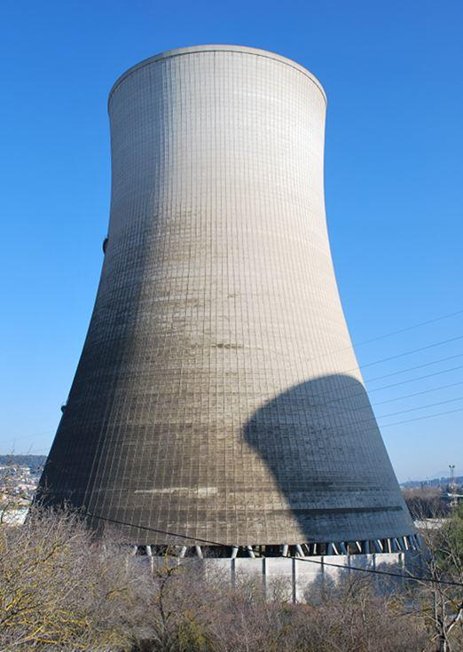
L’un des deux réfrigérants atmosphériques de la centrale thermique de Gardanne.
On voit très bien les diagonales en béton armé supportant la coque ce qui permet l’entrée d’air extérieur pour le refroidissement de l’eau réchauffée venant du condenseur de la turbine à vapeur. Afin d’en faciliter l’évacuation des calories, cette eau tombe en pluie fine depuis un système appelé, dispersion. Ici, les panneaux de clôture sont destinés à protéger cette dispersion et les alentours du vent, appelé Mistral dans la région… Photo. JMT janvier 2021
Elle retourne ainsi refroidie vers le condenseur et ses milliers de petits tubes sur lesquels la vapeur s’échappant des corps BP de la turbine vient se condenser. Dans ce cas, il s’agit donc d’un second circuit mais semi-fermé, qui, de cette manière, limite le prélèvement d’eau dans le fleuve à environ 10 % du débit qui serait nécessaire avec un circuit ouvert. En effet, d’une part, il convient de compenser la quantité d’eau réchauffée s’échappant sous forme de panache en haut du réfrigérant et d’autre part, celle prélevée sous forme de déconcentration en sels, lesquels dans le cas contraire s’accumuleraient (carbonates, silice, boues diverses…).
Les centrales a lignite
Le lignite se situe entre la houille (charbon) et la tourbe. Il s’agit de plantes fossilisées à teneur en carbone modérée, soit environ 65 % mais à forte teneur en eau, laquelle représente plus de 60 % en masse. À cela et suivant les lieux d’extraction, on trouve des sulfures en quantité plus ou moins importante.
En France, composée de deux tranches de 125 MW, la seule centrale thermique d‘EDF ayant brulé du lignite fut celle d’Arjusanx, située dans les Landes. Mise en service en 1959, elle fut arrêtée en février 1992 après 33 années de fonctionnement puis démantelée.
Toutefois, les réserves dans le monde sont très importantes ce qui explique l’énorme consommation dont l’Allemagne a extrait 17 % de son électricité pour l’année 2017, en faisant le principal utilisateur mondial après la Chine (14 %) la Russie (7.5 %) et les États-Unis (6.8 %) mais de très nombreux autres pays recourent aussi au lignite pour une part plus ou moins importante de leurs besoins.
L’exploitation du lignite s’effectue à ciel ouvert par d’énormes engins sur rails appelés roues-pelles, qui évacuent leurs excavations par tapis roulants jusqu’à la centrale qui se situe à proximité du gisement de manière à limiter le transport du produit.
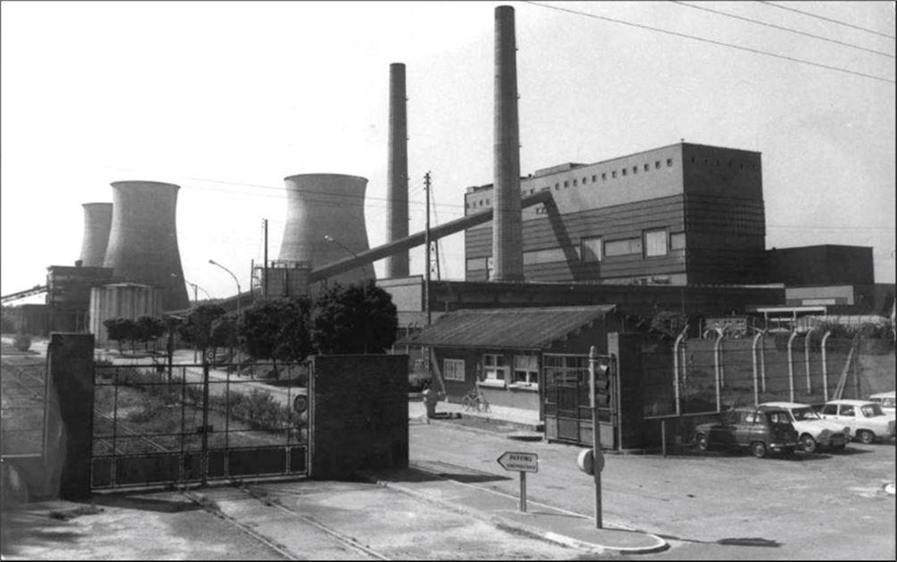
La centrale thermique EDF d’Arjuzanx et ses réfrigérants atmosphériques.
Noter l’âge des voitures garées sur le parking… Photo. Archive journal Sud-Ouest.
Néanmoins, avant d’arriver à la chaudière, le lignite est largement déshydraté, soit entre 10 et 12 % en masse puis broyé ce qui occasionne une consommation d’énergie non négligeable comme d’entretien du matériel.
Pour ce qui concerne le traitement des fumées, d’une manière classique il s’opère via un dépoussiéreur électrostatique et une injection de dolomie, voire de calcaire.
NOS VOISINS ALLEMANDS POLLUENT-ILS DE CIEL DE LA DOUCE FRANCE ?
Une affirmation qui revient régulièrement alors que l’Allemagne est sensée, parait-il, constituer un modèle écologique, ne serait-ce qu’en arrêtant petit à petit ses centrales nucléaires, forcément de sinistre mémoire.
Sauf que dans l’hémisphère Nord, entre les 30è et 60è parallèles, se situe ce qui est appelé la cellule de Ferrel dans laquelle le flux zonal (les vents) circule majoritairement d’Ouest en Est. Un constat qui limite fortement la pollution de l’Est de la France par les fumées des centrales à charbon comme à lignite situées outre Rhin.
Ensuite, l’observation de la direction des vents suivant la saison montre qu’ils sont peu fréquents venant de l’Est, plus soutenus depuis le Nord mais dominants de l’Ouest et du Sud.
Par conséquent, malgré ce qui est régulièrement affirmé, il paraît douteux que la région Alsace puisse beaucoup souffrir des rejets des centrales électriques allemandes, d’autant que le lignite utilisé dans le sillon du Rhin est à basse teneur en soufre.
La centrale biomasse de Gardanne
Retenons que Gardanne 4 est intéressante par le fait qu’elle est actuellement la centrale thermoélectrique, dite à biomasse, la plus puissante en France sinon d’Europe.
Cependant, en préambule, considérons que l’objet de ce chapitre n’est pas de porter un jugement particulier sur cette installation mais de rester dans le domaine technique et écologique ce qui, évidemment, n’interdit pas l’analyse, qu’elle soit positive ou négative.
Pour mémoire, au cours des temps passé et jusque dans les années 80 pour les derniers, la France ne compta pas moins d’une dizaine de bassins houillers dont les plus connus furent ceux du Nord-pas de Calais, de Lorraine, du Centre et de Provence. Chacun était équipé de centrales n’appartenant pas nécessairement à EDF mais à peu près toutes brûlant une partie du charbon extrait, plutôt de basse qualité.
En ce qui concerne celui de Provence, il comportait 4 tranches de production d’électricité qui utilisaient, comme sur les autres sites, le charbon local, soit :
- Gardanne 1 à 3 d’une puissance unitaire de 55 MW dont la construction s’étendit de 1953 à 1962 pour un arrêt définitif en 1981.
- 1967, vit la mise en service de Gardanne 4 d’une puissance de 250 MW.
- 1981 fut le début de la construction de Gardanne 5, soit une puissance brute de 600 MW. Plutôt destinée à fournir des appoints à la demande du réseau, elle est à l’arrêt depuis plusieurs années mais compte tenu de la situation actuelle son déclassement ne devrait désormais plus intervenir que vers 2022.
Gardanne 4, l’unité à biomasse
En septembre 2012, la société allemande E.EON alors propriétaire, décida de transformer Gardanne 4 en unité brulant de la biomasse (3) à concurrence d’une puissance électrique de 150 MW. Toutefois, sous la pression d’associations locales s’alarmant au sujet de la consommation de bois, l’autorisation de mise en service sera suspendue par le Tribunal administratif de Marseille. Elle fut depuis rétablie par la Cour d’Appel, soit décembre 2020, séparant semble-t-il en cela la production d’énergie électrique de l’impact représenté par l’utilisation de bois.
À l’origine, impulsée par des considérations de diversification de la production électrique mais vraisemblablement par d’importantes subventions venues de Bruxelles comme du gouvernement français, l’unité 4 fut donc transformée pour bruler de la biomasse. Un terme tout de même à géométrie variable car en l’état, il ne s’agit pas que de bois d’arbres et/ou de leurs branchages mais également de charbon pauvre issus de terrils voisins.
Concernant cette unité à bois, éponyme de Gardanne, le petit calcul ci-dessous pas compliqué du tout, conduit tout de même à constater ce qui suit :
A pleine puissance, une tranche de 125 MW à fuel lourd en consomme 27 t chaque heure, soit pour 150 MW, 32 t/h. Son PCS (Pouvoir Calorifique Supérieur) est de 12.8 kWh/kg (12 800 kWh/t). Le PCS du bois de chauffage est estimé en moyenne à 5.0 kWh/kg (5 000 kWh/t), soit 2.56 fois moins que celui du fuel lourd.
En ce qui concerne Gardanne 4, les éléments recueillis montrent que 47 % du bois proviendraient de la région, 38 % importés dont du Brésil et comme souligné ci-dessus, 15 % de charbon pauvre extrait des terrils issus de la mine ce qui n’est pas très bio.
Le bois représenterait ainsi 47 + 38 = 85 % de la puissance calorifique fournie par la chaudière.
L’intérêt d’un exploitant de centrale thermique est évidemment qu’elle fonctionne le plus longtemps possible à pleine puissance puisqu’elle est conçue pour cela et que le combustible nécessaire soit acquis au plus bas prix ce qui paraît normal afin de rentabiliser au mieux son unité. Si maintenant on traduit cela en puissance calorifique puis en volume de bois en admettant raisonnablement 0.45 de densité moyenne (masse volumique) pour le bois de chauffage et compte tenu des arrêts pour entretien et autres, soit 90 % du temps à pleine puissance = 7 884 heures annuelles, on arrive à ce qui suit :
Bois = 32 (t/h de fuel) x 2.56 = 81.92 (t/h) x 7 884 (h/an) = 645 857 tonnes par années.
Comme la densité retenue dans cet exemple pour le bois de chauffage est de 0.45, on obtient alors 1 435 238 m3 annuels de bois.
Sachant toutefois que le bois représente 85 % du combustible introduit dans la chaudière, cela conduit à 548 978 t/an ou si l’on préfère 1 219 953 m3/an.
Ce qui signifie que chaque MW installé consommerait 8 133 m3/an de bois.
Est-ce astronomique ? Pour apprécier, une autre vue de la chose consiste à représenter cela par un cube de bois de chauffage d’environ 112 m de côté ou un volume de 400 mètres de longueur, 25 mètres de hauteur et 122 m de largeur. Même à l’échelle des forêts locales c’est à la fois important et peu, surtout si l’on observe d’avion les surfaces boisées mais les choses changent si l’on examine l’affaire autrement, à savoir :
- Une telle centrale est faite pour fonctionner de 30 à 40 années, sinon plus, durée qui fait partie de son amortissement financier et donc de sa rentabilité financière.
- La forêt méditerranéenne est fragile et à pousse lente, à la fois soumise aux incendies et à l’urbanisation, d’où par exemple, les avions bombardiers d’eau basés sur l’aéroport de Marignane comme les très nombreux casernements de la sécurité civile.
- S’il s’agit d’ébranchage des forêts et de récupération de diverses boiseries (meubles, déchets, etc.), l’affaire peut s’entendre mais ceci ne paraît guère envisageable sur une longue période.
Ensuite, entretenir les forêts n’est pas aisé et coûte cher en main d’œuvre ce qui n’est pas financièrement rentable.
- En cas de coupes d’arbres, il convient de garantir sans délai la replantation mais la croissance est lente et l’érosion des sols parfois rapide.
- On note que l’approvisionnement en bois et en charbon est prévu par camions.
Compte tenu du tonnage annuel en jeu sachant qu’un camion semi-remorque emporte au mieux et en étant optimiste, environ 33 tonnes, cela représente annuellement 16 636 véhicules lourds, soit sur 328 jours (90 % du temps annuel), pas moins de 51 véhicules/jour pour alimenter la chaudière, quelle que soit l’origine des chargements de bois auxquels s’ajoutent ceux venant des terrils.
- Chaque véhicule en charge consommant environ 38 litres de gazole aux 100 km, cela donne déjà une idée du volume de carburant annuellement nécessaire, lequel n’est ni vert, ni bio, ni éco-responsable…
- Concernant les bois importés, il convient d’intégrer toute la chaine de dépense énergétique depuis la récupération des bois puis leur transport par mer depuis l’Amérique du Sud grâce à des bateaux dont les moteurs ne fonctionnent vraisemblablement pas à l’eau minérale bio. On supposera évidemment, comme dans le cas de la forêt méditerranéenne que des plantations seront sans délai réalisées…. Ensuite, il y a le déchargement puis le transport local en France, autrement dit, toute la chaine logistique.
À ce propos, remarquons tout de même que la voie de chemin de fer alimentant autrefois la centrale, est désaffectée depuis plusieurs années. Un seul wagon emporte en moyenne 60 tonnes ce qui représente près de deux camions semi-remorques de type super lourd (44 tonnes).
Une seule rame de 26 wagons par jour remplacerait donc l’ensembles des camions apportant le bois. Or, suivant les informations recueillies, ceci ne semble pas d’actualité.
Sans porter de jugement hâtif, l’on a tout de même du mal à se persuader que brûler du bois dont de forêt dans une chaudière d’une telle puissance, soit la bonne solution.
Ceci d’autant qu’il ne faut pas oublier que le rendement thermodynamique de l’installation se situera aux environ de 45 % en supposant que tant le bois que le charbon pauvre ne seront pas trop humides.
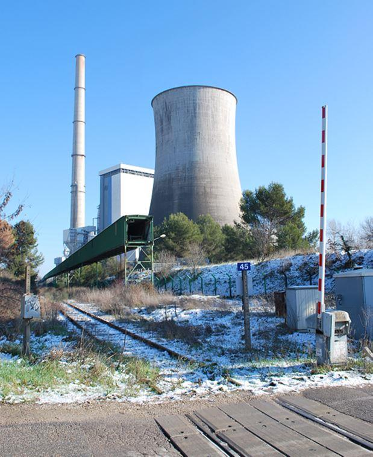
La voie abandonnée de chemin de fer qui alimentait autrefois la centrale de Gardanne en charbon.
Photos. JMT Janvier 2021
Or, pour ce dernier, au cours du temps le charbon s’oxyde ce qui conduit à son appauvrissement en carbone se traduisant par une chute de PCS qu’il est alors nécessaire de compenser par autre chose afin de maintenir la puissance calorifique de la chaudière.
Comme il n’est pas prévu de cogénération, autrement dit de récupération de la chaleur perdue, soit 55 %, celle-ci ira chauffer les oiseaux à partir du bois de forêts locales et/ou d’Amérique du Sud.
Lorsque l’on connaît la fiabilité des circuits d’importation comme la faiblesse à terme de la production forestière méditerranéenne, il y a effectivement de quoi s’interroger.
On observe d’ailleurs que l’émoi local provoqué par cette affaire remonta tout de même jusqu’en Ardèche du Sud, soit à plus de 200 km de là où vers 2016 des coupes furent réalisées pour alimenter la chaudière de Gardanne 4.
Sans subventions qui ne sont jamais que des impôts, l’on peut aussi se poser la question de savoir si de telles installations verraient le jour ? Quelle en est la justification ?
Coût des subventions prévues : 1.50 milliards au titre de la transition énergétique, autrement dit, par le contribuable. Il y aurait donc ici un très bon exemple de cette transition énergétique qui se veut respectueuse de l’environnement, éco-responsable, verte et autres merveilleux qualificatifs. Or, Gardanne qu’il ne s’agit pourtant pas de diaboliser mais simplement au sujet de laquelle il convient de s’interroger, n’est pas le seul exemple du genre en France…
Sans s’aventurer outre mesure, cette affaire montrerait néanmoins à nouveau que finance et écologie-business feraient souvent assez bon ménage mais que la planète n’y retrouve guère son compte si l’on en juge seulement par ce qui se passe en Afrique, en Amazonie ou en Indonésie (4). Si l’on peut à juste titre retenir le bois comme combustible, on a tout de même quelques difficultés à admettre la justification d’installations de grande puissance comme les centrales de production d’électricité qui nécessitent des consommations très importantes avec un rendement de conversion calories utilisées/électricité produite limité.
En revanche, pour des chaudières attribuées à du chauffage urbain ou d’usines (vapeur et/ou eau chaude ou surchauffée), naturellement sous réserve d’une production locale de bois comme dans le Jura, les Vosges ou en d’autres lieux favorables à leur croissance en Europe, cela peut s’entendre avec un intérêt évident. Cependant, encore faut-il que les coupes restent raisonnables et qu’elles soient sans délai remplacées par des plantations forestières diversifiées et non pas uniquement en résineux ce qui présente divers inconvénients non négligeables pour l’écosystème local.
Il en est de même pour l’entretien des forêts car l’on peut aussi imaginer que chaque propriétaire, sous réserve d’un intérêt financier même modeste, soit ainsi incité à participer à la production de chaleur mais là encore, il existe des limites. En effet, les petits branchages et autres déchets organiques participent à l’enrichissement de l’humus et à fortement limiter l’érosion des sols.
Avantages et inconvénients des centrales électriques à charbon ou à lignite
Il est indéniable que la combustion du charbon comme celle du lignite dégage à la cheminée des gaz contenant divers produits mais sous réserve de ce qui fut précédemment exposé et non directement dans l’atmosphère comme certains ont un peu trop tendance à le professer. De même, l’emprise au sol est importante, soit : entreposage du charbon, extraction du lignite et rejet des mâchefers comme des cendres. Toutefois, pour l’extraction du lignite, les Êtas et les compagnies que l’on qualifiera de sérieux, rebouchent en partie ou en totalité ce qui fut prélevé dans le sol et replantent de la végétation dont de la forêt. C’est ce qui se passe en Allemagne et sans doute plus ou moins fréquemment ailleurs.
Compte tenu de la consommation électrique des auxiliaires nécessaires au bon fonctionnement d’une tranche de centrale, son rendement calculé sur le PCS (Pouvoir Calorifique Supérieur) ne dépasse guère 42 à 44 %, moins si l’on retient le PCI (Pouvoir Calorifique Inférieur) qui tient compte de l’eau issue de la combustion (5).
Suivant les nécessités fonctionnelles d’une telle unité, tant pour la manutention (parc à charbon ou site de lignite) mais également pour l’entretien des matériels suivant leur usure, cela nécessite davantage de personnel que pour une centrale à fuel et même encore plus par rapport à la même fonctionnant au gaz.
Hormis cela, on doit retenir que ces centrales se trouvent généralement sur le site de production du combustible ce qui évite du transport comme c’est le cas avec le fuel ou le gaz. Néanmoins, pour la France qui n’a plus d’exploitation minière pour alimenter ces chaudières, le charbon est importé mais retenons que si cela se passe mal durant le transit, il n’y a pas de catastrophe comme avec un combustible liquide de sinistre mémoire, un aspect important généralement oublié. A cela, on peut également ajouter :
- Tant le charbon que le lignite sont très abondants sur Terre et beaucoup de sites sont désormais exploités à ciel ouvert ou pas trop profondément.
- Ces centrales ont un rendement global acceptable comme une durée de vie importante, soit 40 à 50 années voire plus suivant l’entretien consenti.
- Leur durée de construction est relativement rapide, soit en moyenne trois années et le coût reste modéré, permettant un retour sur investissement à moyen terme.
- Les fumées émises peuvent être correctement traitées contre les émissions de poussières et leur acidité neutralisée d’un point de vue chimique avec des produits naturels, ce qui est le cas en France.
- Grâce à l’utilisation de réfrigérants atmosphériques, le rejet d’eau réchauffée reste limité à environ 10 % de l’eau nécessaire pour condenser la vapeur échappant des corps BP de chaque turbine.
- La déconstruction ne pose pas de difficulté particulière, comme le recyclage des matériaux (aciers, etc.).
- Si l’évacuation des cendres peut constituer une difficulté, il est aussi ultérieurement possible de les utiliser comme remblais d’excavations ou autres et même de replanter de la végétation dont de la forêt.
Toutefois, il convient de souligner :
Pour un pays comme la France, le charbon doit désormais être importé, ce qui constitue une dépendance vis-à-vis de l’Étranger (disponibilité et prix) mais il en est de même du minerai d’uranium comme du gaz.
Le transport du combustible n’est pas gratuit et les moteurs des bateaux ne fonctionnent pas à l’eau minérale.
Les coûts de manutention (parc à charbon) et d’entretien (usure du matériel) ne sont pas négligeables mais après tout, ceci est l’affaire de l’exploitant.
Reste l’incontournable CO2 et autres GES (Gaz à Effet de Serre) mais comme il fut précédemment souligné et plus largement explicité ci-dessous, certains procédés permettent d’en limiter fortement l’émission. Ensuite, précisément en ce qui concerne les réfrigérants atmosphériques ou similaires, des dispositions particulières seraient certainement susceptibles d’améliorer grandement les choses en la matière. Des études en ce sens méritent certainement d’être poursuivies (voir ci-après un autre chapitre à ce sujet).
L’emprise au sol est relativement importante (parc à charbon).
Pour finir, qu’est-ce qu’une centrale thermoélectrique à flamme ?
Dans son principe de fonctionnement, il s’agit d’une installation assez simple mais dans sa construction comme pour son exploitation, c’est tout à fait autre chose et en ce qui concerne les schémas ci-dessus, ils précisent bien qu’ils ne représentent qu’un principe général et c’est tout. Si l’on considère seulement un simple ballon de chaudière, observé de plus près il ne s’agit pas que d’un banal réservoir car pour n’aborder que la séparation de l’émulsion eau/vapeur remontant des tubes écrans qui constituent les parois de la chambre de combustion, celle-ci ne s’effectue pas toute seule mais via des dispositifs internes élaborés. Ajoutons à cela les conditions de température et de pression auxquelles ce matériel est soumis sans oublier qu’il n’y a pas que lui...
Il s’agit donc et avant tout d’un monde d’acier, d’eau et d’un ou de plusieurs carburants (charbon, lignite, fuel, gaz, agromasse).
Dans les centrales à flamme, on distingue ainsi deux grands circuits indépendants :
- Celui du générateur de vapeur jusqu’à l’échappement des corps BP de la turbine qui constitue une boucle fermée, sans contact avec l’environnement.
- Celui ouvert ou semi-ouvert intéressant l’eau brute du fleuve, de la mer ou du réfrigérant atmosphérique pour ce dernier cas.
Pour mémoire, les centrales nucléaires françaises de type REP (Réacteurs à Eau Pressurisée) comportent deux boucles fermées et une troisième comme ci-dessus pour les centrales à flamme ce qui représente trois barrières vis-à-vis de l’environnement.
Rendement thermodynamique
L’énergie mécanique est la seule énergie noble, toutes les autres n’en sont que dérivées dont l’électricité. Pour cela, il ne peut y avoir qu’un échange entre une source chaude et une source froide. Ceci est parfaitement défini par l’une des branches de la science qui s’appelle la thermodynamique suivant ce qui fut, en son temps, exposé par le Français Nicolas Léonard Sadi Carnot. Suivant cela, plus l’écart de température entre ces deux sources sera important, plus le rendement sera élevé. Ce constat signifie que le fonctionnement d’une centrale thermoélectrique étant soumis à la température de la source froide qui varie dans des proportions assez faibles, soit environ de 5 à 28/30 °C au mieux l’été, l’intérêt réside alors à augmenter au plus celle de la source chaude. Autrement dit, celle de la vapeur d’eau surchauffée mais avec une limite qui correspond à la résistance mécanique des différents circuits, d’où 565 °C pour les tranches classiques les plus puissantes.
Individuellement pour chaque composant, les rendements sont excellents, soit en moyenne 90 % pour les générateurs de vapeur, 95 % pour la turbine seule et autant pour l’alternateur.
Cependant, ce serait oublier l’incontournable rendement du cycle thermodynamique entre source chaude et source froide, soit entre l’admission corps HP et l’eau condensée dans le puits du condenseur et c’est ici que tout change… En effet, 0.90 x 0.95 x 0.95 = 0.81, valeur intéressante alors que le rendement final de l’installation n’est que d‘environ 0.45, soit une perte totale de 55 %. Où sont-ils ? Tout simplement partis dans la source froide, soit les différents composants ci-dessus, le fleuve, la mer ou le panache de vapeur du réfrigérant atmosphérique et pas moyen de faire autrement !
Un autre traitement pour les fumées ?..
La grosse difficulté avec les centrales à combustibles fossiles dont en premier le charbon et le fuel lourd, provient inévitablement du rejet de GES à la cheminée, même si les gaz sont largement neutralisés par un carbonate et dépoussiérés.
Un film datant vraisemblablement des années 75, sinon avant (6), montre une installation en Allemagne mais sans préciser laquelle, manifestement équipée de tours de lavage de gaz de combustion. L’ensemble est constitué d’un matériau composite à base de fibres de verre E et d’un système thermodurcissable vinyle ester, capable de supporter en continu une température d’environ 100 à 110°C et naturellement insensible à une majorité de composants polluants comme ceux contenus dans les fumées d’un générateur de vapeur tel qu’ici exposé. Si l’on en juge par leur environnement, le diamètre des conduites d’amenées des gaz est de l’ordre de 6 à 7 m et pour chaque tour une hauteur d’au moins 20 à 25 m.
Appliqué à des unités à charbon d’une puissance d’environ 250 MW, peut-être plus, il y aurait ici une voie certainement intéressante pour le traitement des GES par lavage à l’eau pulvérisée additionnée d’un produit naturel bon marché (soude, carbonate ou autre) destiné à la neutralisation des GES.
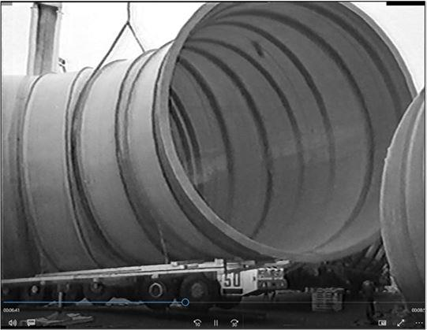
L’une des tuyauteries en matériau composite d’amenée des gaz à la tour correspondante.
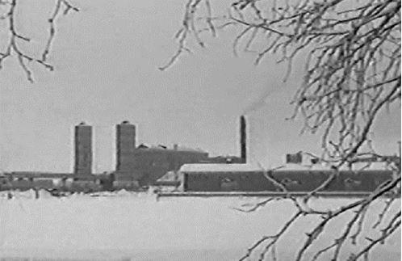
L’installation vue de loin.
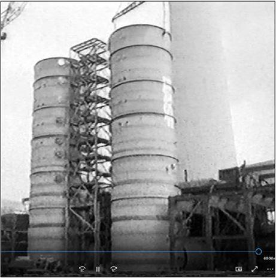
Les deux tours en cours de montage près de la cheminée
Inconvénient tout de même du système : le prix. En effet, cet ensemble n’est évidemment pas gratuit mais il convient de le considérer d’une part, par rapport au gain escompté vis-à-vis de l’environnement, d’autre part suivant la durée de vie de l’installation, soit vraisemblablement entre 40 et 50 années sinon plus suivant l’entretien consenti à celle-ci.
La centrale EDF à charbon de Cordemais
Située en France dans le département de la Loire Atlantique (Près de Nantes), la centrale EDF de Cordemais est équipée de deux tranches de 600 MW alimentées au charbon provenant de différents pays dont la Russie. Opérationnel depuis 1995, un traitement complet des fumées mérite ici toute attention.
INSTALLATION DE DÉNITRIFICATION
Le procédé consiste à injecter de l’ammoniaque (NH4OH) dans le circuit des fumées, ceci en présence d’un catalyseur, le titane. Le rendement de la réaction chimique avec les oxydes d’azote produits par la combustion (NOx) atteint environ 80 %. Le rejet est de l’eau à l’état de vapeur et du diazote (NO2), le même gaz composant l’atmosphère terrestre pour environ 78 %. Ensuite, les fumées passent dans le dépoussiéreur tel qu’explicité ci-dessus.
AUTRES TRAITEMENTS
Ces deux tranches sont évidemment équipées d’une neutralisation des fumées par double carbonate de calcium et de magnésium CaMg(CO3)2 ou similaire et un dépoussiéreur électrostatique. Quant à l’émission des fumées résultantes, elle est effectuée par une cheminée de 220 m de hauteur.
ÉCONOMIE D’EAU
Cette unité est également équipée d’un bassin de 4000 m3 récupérant les eaux de pluie ce qui offre plusieurs avantages dont en particulier :
- L’économie de pompage dans la nappe phréatique via l’eau de ville comme dans la Loire contenant en ce lieu une certaine quantité de chlorure de sodium (eau saumâtre).
- L’humidification des cendres issues du dépoussiéreur des fumées ce qui évite leur dispersion et facilite leur évacuation.
PRODUITS ANNEXES
Comme il n’y a pas de petites économies, les traitements ci-dessus des fumées donnent accès à deux produits dérivés, soit :
- Les cendres (dites volantes) issues du dépoussiéreur sont utilisées pour la fabrication de ciments. Ces cendres sont conformes à la réglementation européenne EN 450 d’octobre 2012.
- Quant au gypse, il provient de la synthèse de la réaction chimique survenant dans l’installation de désulfuration. Sa qualité est supérieure à celle du gypse naturel ce qui permet de l’utiliser avantageusement dans certains ciments et naturellement pour la fabrication de plâtre.
RÉSUMONS…
Neutralisation des sulfures (environ 80 %), neutralisation des oxydes d’azote (environ 80 %) puis dépoussiérage final à 99 %, on voit immédiatement qu’il ne reste pas grand-chose des composés indésirables d’origine issus de la combustion du charbon hormis de CO2.
À cela s’ajoute la production de produits dérivés pour la construction, lesquels indirectement limitent les prélèvements dans la nature sans oublier que le transport maritime et/ou ferroviaire du combustible, le charbon, ne présente absolument pas les mêmes risques qu’avec un carburant liquide.
Une voie à développer ?..
Un traitement plus complet des fumées est-il sans solution, particulièrement pour le CO2 ? Ci-dessus présentée à partir de quelques saisies d’images extraites de cet ancien film, l’initiative allemande interpelle car elle montre que rien n’est techniquement impossible.
Il en est de même pour les deux tranches 600 MW de la centrale thermique à charbon d’EDF, construite à Cordemais, sous réserve :
- De bonnes idées, nécessairement pragmatiques pour essayer de résoudre l’équation posée mais en évitant l’écueil traditionnel qui consiste à faire compliqué et donc onéreux ce qui, pour beaucoup, est souvent plus aisé que de concevoir simple.
- De l’investissement financier nécessaire et consenti puis la durée de retour sur cet investissement. Bien entendu, sans oublier en passant de donner aussi un prix à l’environnement qui constitue tout de même l’objectif premier pour envisager de réhabiliter la centrale à charbon.
INSTALLATION LOCALE ET CO2
Observons que toute centrale à combustible fossile dont à charbon, dispose d’une cheminée d’autant plus importante suivant la puissance de l’unité concernée. Suivant cela, plutôt que de construire un ensemble spécifique pour le traitement des fumées, pourquoi ne pas directement utiliser et adapter le fût en sa partie basse.
Sous réserve du volume disponible, cet espace pourrait ainsi être judicieusement utilisé pour assurer certains traitements des fumées avant leur évacuation dans l’atmosphère dont celui de l’incontournable dioxyde de carbone dont par exemple la carbonatation du CO2 suivant ci-dessous :
Chaux + CO2 = Carbonate de calcium (Ph. basique) qui précipite + eau, soit :
Ca(OH)2 + CO2 → CaCO3 + H2O
En présence de soude, soit :
2HO + CO2 → CO3 + H2O puis 2Na + CO3 → Na2Co3 (carbonate de sodium)
Ceci implique évidemment de protéger de la corrosion le béton comme l’acier ce qui peut être résolu par un revêtement, soit sous forme d’un polymère appliqué comme une peinture, soit sous forme d’un matériau composite, beaucoup plus durable.
Que va-t-il alors rester comme polluants sinon en grande partie que de la vapeur d’eau et du diazote qui ne dérangent personne ?
Ajoutons un réfrigérant atmosphérique pour ne pas échauffer l’eau du fleuve, un transport de combustible solide qui ne pose pas de difficulté d’autant s’il est localement extrait, n’y a-t-il pas ici une autre vision de la centrale à charbon comme à lignite ?
Pour les pays ne disposant plus de bassins houillers, dans la mesure où les supertankers transportant du pétrole brut laissent régulièrement de sombres traces, un bateau de 250 000 tonnes apportant du charbon n’aurait guère de conséquence en cas de naufrage, quel qu’en soit la nature, y compris en cas de conflits armés. De plus, un tel chargement assure déjà une certaine autonomie à la centrale concernée.
Cela signifie que si l’on peut porter des appréciations négatives sur les installations actuelles, cela n’implique pas nécessairement de ne pas les améliorer et ainsi de réviser le jugement porté. Dans le cas contraire, sans s’interroger, il est évident que l’on arrive inévitablement à condamner telle ou telle technologie ce qui est absurde.
Pour les centrales déjà en exploitation et dans la mesure où la place alentour reste disponible, suivant ce qui est ici exposé, rien n’interdit de concevoir un tel ensemble de traitement avant rejet des gaz à la cheminée.
On remarquera qu’en ce qui concerne ces dernières et pour les constructions neuves, cette installation permettrait vraisemblablement d’en diminuer la hauteur suivant les proportions des réfrigérants atmosphériques actuels, soit entre 110 et 165 m/sol comme d’améliorer encore le rendement du générateur de vapeur par une plus importante récupération des calories des fumées.
Revenant un instant sur les éoliennes et les panneaux photovoltaïques, une analyse de la valeur montre rapidement que de telles centrales à charbon n’ont rien à leur envier. Pourtant, que d’éloges et d’argent investis au sujet de ces deux énergies, comme si elles allaient sauver la planète d’un désastre annoncé ! Rêvons toujours…
Conclusion ?..
Si l’on veut vraiment être écolo, sans doute convient-il en premier lieu de commencer par ne pas gaspiller l’énergie électrique. Ce n’est pas en renchérissant sans cesse le prix de vente du kWh que se trouve nécessairement le bon chemin, solution facile mais d’abord et comme pour beaucoup de choses, par l’information et par la pédagogie honnête auprès de l’utilisateur et non le bâton.
Dans le système de consommation à outrance et donc d’inévitable gaspillage sur lequel repose la société occidentale, nous en sommes évidemment très loin puisque c’est sa raison première d’être !.. Ensuite, il est évident et sans se ruiner pour autant, que la centrale à charbon comme à lignite peut évoluer vers un meilleur respect de l’environnement.
En particulier, grâce à des améliorations techniques dont font peut-être partie la combustion sur lit fluidisé, ce qui est ci-dessus exposé concernant un traitement final des fumées puis, la technique évoluant à grands pas, l’automatisme au niveau de la conduite des installations afin d’optimiser leur fonctionnement.
Il peut en être de même pour les centrales à bois destinées à du chauffage urbain, par exemple. En effet, leur exploitation peut s’avérer bénéfique au niveau de l’exploitation judicieuse de la forêt française, souvent mal entretenue mais avec toutes réserves pour la production d’électricité à grande échelle, manifestement seulement envisageable d’une manière marginale.
Comme indiqué, le rendement d’une chaudière de centrale thermique, quel que soit le combustible, se situant en moyenne entre 90 à 92 % ce qui est excellent, si l’on veut bien revenir un instant à Gardanne 4 pris comme exemple, l’utilisation directe sous forme uniquement calorifique serait voisine de 330 MW thermiques, puissance déjà considérable.
Enfin, concernant le CO2 et ceci indépendamment de la combustion des énergies fossiles, sans doute serait-il déjà bon de commencer par ne plus déforester la planète dont l’Afrique, l’Amazonie, l’Indonésie et autres lieux mais au contraire de prendre conscience du rôle général et fondamental de l’arbre dans l’équilibre thermique de l’atmosphère (cf. 4).
Ce n’est évidemment pas en se comportant comme un insecte prédateur et en transformant petit à petit la croûte terrestre en radiateur infrarouge que l’Humanité va trouver son bonheur mais en la reforestant comme le font les Chinois dans certains déserts de leur pays… (7)
En effet, la modification de l’albedo terrestre consécutive à l’abattage des forêts, induite par la réflexion du sol aux rayons solaires ne se traduit pas par des effets à long terme mais immédiats (8).
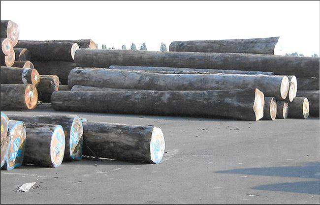
Plus jamais cela ? Dans un port du Nord-Ouest de la France, énormes grumes de bois exotique avant transformation en articles de menuiserie que des consommateurs inconscients des ravages causés dans les forêts tropicales achèteront « parce que ce n’est pas très cher, parce que c’est joli, parce que cela ne pourrit pas… »
Photo. JMT 2008.
Terminons par une communication par visioconférence du Président Vladimir Poutine lors de la 17è réunion du club de Valdaï le 22 octobre 2020 à Novo-Agaryovo, près de Moscou. (9). Rien à ajouter, tout est dit mais cela ne risque pas de plaire à tout le monde… Et pourtant, chacun devrait s’en inspirer avant de prendre des décisions qui vont trop souvent à l’encontre de l’objectif recherché sans se soucier du portefeuille du contribuable et/ou de la nature.
« Quand vous avez fini de vous laver et de vous habiller chaque matin, vous devez vous occuper de votre planète. ... C'est un travail très fastidieux, mais néanmoins facile. Je suis sûr que nous devons continuer à faire ce "travail fastidieux" si nous voulons préserver notre maison commune pour les générations futures.
Nous devons prendre soin de notre planète. La question de la protection de l'environnement est depuis longtemps inscrite à l'ordre du jour mondial.
Mais je voudrais l'aborder de manière plus large pour parler aussi d'une tâche importante, à savoir l'abandon de la pratique de la consommation effrénée et illimitée - la surconsommation - au profit d'une consommation suffisante, judicieuse et raisonnable, lorsque l'on ne vit pas seulement pour aujourd'hui mais que l'on pense aussi à demain.
Nous disons souvent que la nature est extrêmement vulnérable à l'activité humaine. Surtout lorsque l'utilisation des ressources naturelles prend une dimension mondiale.
Cependant, l'humanité n'est pas à l'abri des catastrophes naturelles, dont beaucoup sont le résultat d'interférences anthropiques. D'ailleurs, certains scientifiques pensent que les récentes épidémies de maladies dangereuses sont une réponse à cette interférence.
C'est pourquoi il est si important de développer des relations harmonieuses entre l'homme et la nature ».
*
Ce n’est donc pas avec de ruineuses éoliennes et autres panneaux solaires qui n’ont, l’un comme l’autre, strictement rien d’écolo (10) que l’on va sauver la planète et guère plus avec le gaz de fermentation, surtout si l’on commence à exploiter des terres agricoles comme des forêts (11) sans compter que sur ce marché, il y a déjà les agrocarburants qui en sont issus, improprement appelés biocarburants.
L’on a également quelque difficulté à se persuader, sous couvert d’énergie bio, verte, d’éco-responsable, renouvelable, etc. qu’il soit judicieux d’utiliser le bois à grande échelle pour l’envoyer dans des chaudières de centrales électriques ou désormais pour fabriquer des granulés destinés à alimenter des millions de poêles du même nom, lesquels ne nécessitent en général pas moins de trois moteurs électriques durant leur fonctionnement !
Accessoirement… Quant à l’utilisation du dihydrogène (H2) qui, suivant certains, devrait également sauver le monde, sans doute conviendrait-il en premier lieu de se poser la question de sa provenance car s’il s’agit d’utiliser le gaz naturel ou l’électricité pour en fabriquer, l’affaire tourne inévitablement en rond… (Cf. articles déjà parus dans METHODE).
Ne confondons pas vraie écologie et écologie-business ! Suivant cela, l’intérêt de la science dont découle le progrès et in fine celui de l’économie et donc de la vie sociale, consiste d’être au service de l’Humanité et non l’inverse.
Il s’agit là d’une très grosse erreur d’objectif, laquelle à terme, inévitablement se traduit par un prix humain très élevé à payer car l’écart entre ceux qui possèdent la fortune et les autres ne peut que se creuser avec tout ce que cela implique !
J-M. T.
NOTES ET RÉFÉRENCES
1. Il est important de rappeler que la tension (U) se maintient aux bornes d’un générateur électrique comme entre les fils d’une quelconque ligne. En revanche, c’est l’intensité (A) qui traverse ces mêmes fils. Suivant leur résistance (R) il se produit un échauffement appelé pertes par effet Joules, de la forme : P (Joule) = RI² On a donc tout intérêt à ce que U soit élevé et I minimum.
2. La fréquence du réseau étant de 50 Hz, cela signifie 50 périodes par secondes, soit pour une minute : 50 x 60 = 3000 périodes, autrement dit 3 000 t/min pour un générateur électrique équipé d’un seul pôle par phase (système triphasé). Pour les alternateurs des centrales nucléaires et compte tenu des puissances en jeu, les dimensions des rotors d’alternateur (inducteur) ne permettent plus une telle vitesse de rotation par suite de la force centrifuge exercée sur les bobinages. Ils sont alors bipolaires ce qui permet de réduire la vitesse de rotation à 1 500 t/min. Quel que soit leur type, ils sont refroidis par de l’hydrogène sous pression, soit entre 2.5 et 4.5 bars effectifs suivant leur puissance.
3. On ne le répétera jamais assez mais en de nombreuses occasions ce mot est tout à fait impropre car il s’agit souvent de produits issus de substances non biologiques. C’est donc pourquoi, il convient généralement de retenir le préfixe agro.
4. Du même auteur - Consulter le site internet : www.laplumedutemps.net. INITIATION AU CLIMAT LES MODIFICATIONS CLIMATIQUES EN QUESTION.
5. Avec le PCS, on considère la quantité totale de chaleur dégagée par la combustion.
Avec le PCI, la quantité de chaleur contenue dans l’eau issue de la combustion est déduite ce qui implique que le PCI est toujours inférieur au PCS.
Dans les chaudières domestiques à condensation, on récupère la chaleur contenue dans la vapeur d’eau de combustion au niveau des fumées ce qui n’est pas le cas avec les chaudières non ainsi équipées.
6. Au jour de la rédaction de ce document, il ne fut pas encore possible d’identifier ce film qui ne porte aucune référence, autre que des noms de société apposés, soit sur ce qui semble être l’agglomération où furent construites ces pièces, les engins de manutention, la péniche de transport sur le Rhin jusque vers Mainz en Allemagne. Sous toute réserve, il s’agirait de la chaufferie de l’énorme complexe pétrochimique de la Sté. BASF (Badisch Alinin Und Soda-Fabrik) situé sur le Rhin à Mainz-Ludwigshafen en Allemagne, complexe le plus grand au monde en ce domaine.
7. Suivant BEIJIN INFORMATION, depuis 1949, la Chine a entrepris un vaste programme de reboisement, soit une moyenne de 4 millions d’hectares par année avec un maximum à 5 millions vers 2000.
Partant de 5 % de couverture du territoire, l’objectif est d’atteindre 23 % en 2020 et 26 % en 2050. Suivant la superficie du pays qui est de 9.6 millions de km², soit 17, 45 fois la France, en 2020 cela représente 2.21 millions de km², soit environ 4 fois la superficie de cette même France. La Chine va-t-elle devenir le poumon vert de la planète pendant que l’Occident continue de déforester l’Afrique et certains massifs d’Amérique du Sud ?
Pourquoi, n’en parle-t-on pas ?
L’Afrique représente environ 30 millions de km², soit près de trois fois la Chine. Imaginons que 25 % soient boisés dont une partie du Sahara, soit 7.5 millions de km². Cela signifierait l’arrêt de la progression du désert, quasiment plus de vents de sable, moins de maladies, un bon climat, des pluies abondantes et une économie florissante (bois, énergie, pêche, tourisme, exportations, etc.).
Ce que la Chine a entrepris, pourquoi pas en Afrique plutôt que d’y favoriser les conflits comme de déverser des milliards au titre de l’aide humanitaire et autres arguments mais dont on ne voit toujours pas le résultat ?..
8. Coefficient (sans dimension) de rayonnement du sol. La neige pure est affectée de » 0.9, le sol uniformément sombre de » 0,1, les océans » 0,06 à 0,07. Quant au désert, il se situe vers 0.3 à 0.5. Compte tenu des surfaces en jeu, on peut très vite en deviner les effets thermiques sur l‘atmosphère.
9. Le club de Valdaï est un forum international créé en 2004 par l’agence de presse russe, RIA Novosti.
Son objectif est de permettre à des élites russes d’échanger avec des experts internationaux concernant le développement de la Russie et son rôle dans le monde. Il se réunit chaque année. Son Président est actuellement celui de la Fédération de Russie : Vladimir Poutine.
10. Pour mémoire, suivant leur qualité et divers facteurs environnementaux, les cellules photovoltaïques peuvent perdre jusqu’à 1% d’efficacité par année.
En ce qui concerne la constitution des pales d’éoliennes, on trouve souvent des tissus de carbone dont chaque fil est constitué d’environ 2000 à 5000 filaments élémentaires suivant le type, soit 2 mm de diamètre. Or, c’est sensiblement celui du capillaire d’accès aux bronchioles des poumons. Ce type de fil doit donc faire l’objet d’attention particulière lors de la manutention comme lors de la mise en œuvre, d’autant si ultérieurement il est usiné, réduit en poudre ou autres. En effet, inhalés, les déchets de filaments constitutifs peuvent alors se piquer dans les bronchioles des poumons d’où il ne sera plus possible de les extraire, pouvant à terme provoquer diverses pathologies dont des cancers.
Du même auteur : LES MATERIAUX COMPOSITES APPLIQUES. Site : www.laplumedutemps.net
11. Du même auteur : ENERGIES RENOUVELABLES… VRAI PROGRES OU AUTRE CHOSE ?.. EOLIEN - PHOTOVOLTAÏQUE (mise à jour 2019).
Consulter le site internet : www.laplumedutemps.net
Partager cette page